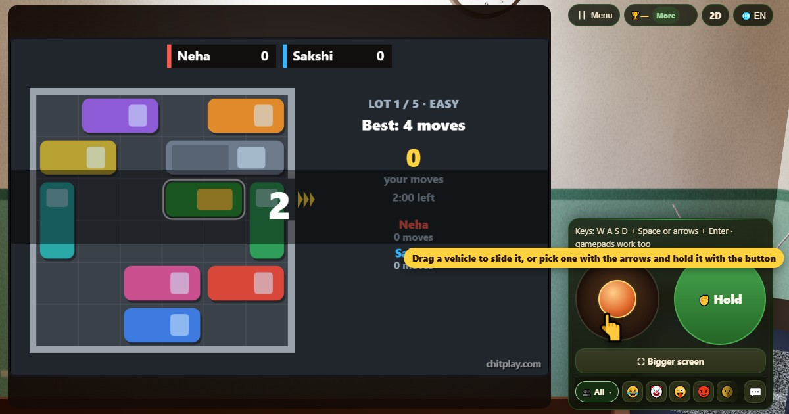

अनब्लॉक पज़ल (Unblock Puzzle)
- 👥 1–4 खिलाड़ी
- पेन और कागज़ वाले गेम
- 🆓
भाषा में गाइड
भरी पार्किंग में फँसा एक ऑटो-रिक्शा। कारें और ट्रक खिसकाएँ और उसे गेट से बाहर निकालें।
English name: Unblock Puzzle

कैसे खेलें
- हर पार्किंग में रिक्शा (हरा, पीली छत), आसपास की गाड़ियाँ और उसकी लाइन के दाईं ओर गेट दिखता है।
- किसी गाड़ी को उँगली या माउस से खींचकर खिसकाएँ। जितना खींचें उतनी जाती है, रास्ते की पहली रुकावट तक।
- या तीरों से गाड़ी चुनें, Hold दबाएँ और तीरों से खिसकाएँ। छोड़ने के लिए फिर Hold दबाएँ।
- जब रिक्शा और गेट के बीच कुछ न बचे, उसे दाईं ओर खिसकाएँ और वह बाहर निकल जाता है। हर पार्किंग के लिए दो मिनट हैं।
अंक कैसे मिलते हैं
बाहर निकलने पर 50 पॉइंट, और कम चालों में करने पर 50 तक और: सबसे कम चालों से हर एक ज़्यादा चाल पर 5 कम। दोस्तों के साथ हर पार्किंग से पहले निकलने वाले को 20 और। 200, 300, 400 और 470 पॉइंट पर मेडल।
कौन जीतता है
पाँच पार्किंग के बाद सबसे ज़्यादा पॉइंट वाला जीतता है।
अक्सर पूछे जाने वाले सवाल
क्या हर पार्किंग हल हो सकती है?
हाँ। हर पार्किंग को डालने से पहले कंप्यूटर ने हल किया है, और सबसे कम चालें आपकी चालों के ऊपर दिखती हैं।
एक चाल किसे कहते हैं?
एक गाड़ी को खिसकाना, चाहे कितनी भी दूर जाए, एक चाल है।
खेलने के तरीके
- गेस्ट की तरह खेलें: कोई साइन-अप या लॉगिन नहीं। नाम चुनें और तुरंत खेलें।
- कंप्यूटर के साथ: जब कोई साथ न हो, कंप्यूटर खिलाड़ी खाली जगह भर देते हैं। आसान, सामान्य या कठिन चुनें।
- ऑनलाइन खेलें: दुनिया भर के खिलाड़ियों के साथ एक सार्वजनिक टेबल पर बैठें।
- दोस्तों के साथ पास में (Nearby): एक फ़ोन पर गेम शुरू करें और कोड या QR कोड बाँटें। दोस्त अपने फ़ोन से जुड़ जाते हैं।
- एक ही फ़ोन पर: फ़ोन बारी-बारी से सबको दें। पूरे परिवार के लिए एक ही डिवाइस काफ़ी है।
दूसरी भाषाएँ
- Hinglish: Unblock Puzzle
- Español: Desbloquea el aparcamiento
- Português: Desbloqueie o estacionamento
- Français: Débloque le parking
- Deutsch: Parkplatz-Puzzle
- Bahasa Indonesia: Teka-teki Parkir
- Türkçe: Otopark Bulmacası
- Italiano: Sblocca il parcheggio
- 日本語: 脱出パズル
- 한국어: 주차장 탈출 퍼즐
- 中文: 停车场解锁
- Русский: Выезд с парковки
- اردو: ان بلاک پزل
- नेपाली: अनब्लक पजल
- বাংলা: আনব্লক পাজল
- English: Unblock Puzzle · पूरे नियम (English)
खेलों के आइडिया
सारे गेम
 स्ट्रूप टेस्ट
स्ट्रूप टेस्ट नंबर मेमोरी
नंबर मेमोरी वर्ड गेस
वर्ड गेस फ़ास्ट टाइपिंग
फ़ास्ट टाइपिंग बिंगो
बिंगो काटा ज़ीरो (टिक-टैक-टो)
काटा ज़ीरो (टिक-टैक-टो) डॉट्स एंड बॉक्सेस
डॉट्स एंड बॉक्सेस मेमोरी मैच
मेमोरी मैच
ChitPlay में कोई असली पैसा, सट्टा या इनाम नहीं है। अंकों की कोई क़ीमत नहीं है।